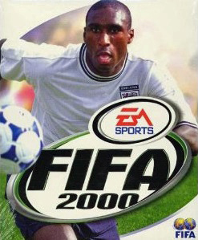
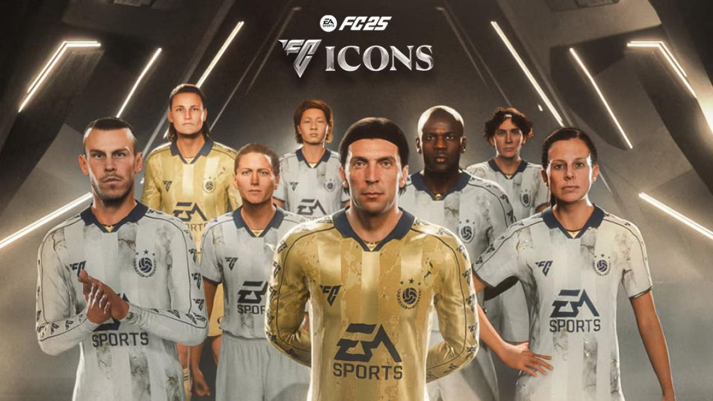

Catàlogo
Últimas noticias sobre la FIFA y el Mundial 2000.
FIFA Catàlogo
-
FIFA 2000

Jugadores Destacados
Información sobre los jugadores más importantes del torneo.
-
FIFA 2001
Estadísticas
Estadísticas de equipos y jugadores durante el torneo.
-
FIFA 2001
Nuestros Productos Retro

Balón Retro
Un clásico balón inspirado en los partidos de los 80.

Camiseta Vintage
Revive la pasión con esta camiseta de estilo retro.

Botines Retro
Para los amantes del fútbol con un toque nostálgico.